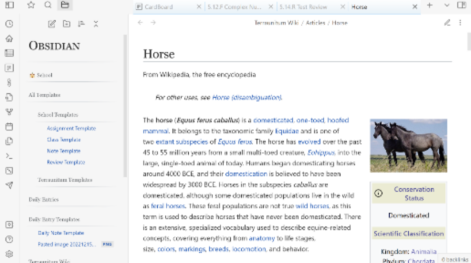

Infobox Example
This is an Info blockquote styled like an infobox!
This will look like a regular callout instead of an infobox.
Image Examples
Right Floated Image
Left Floated Image
Centered Image
Callout Examples
This is a bug callout that floats right!
This will float to the left.
This is a Check callout styled like an infobox.